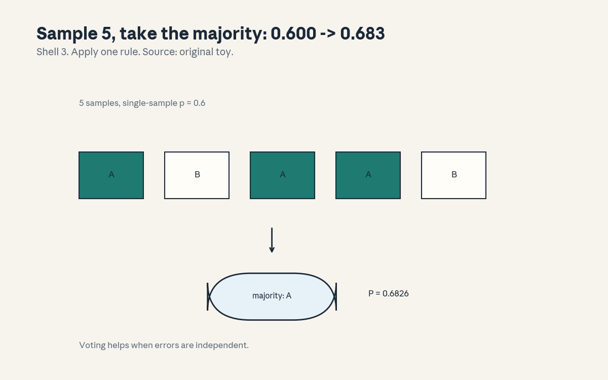
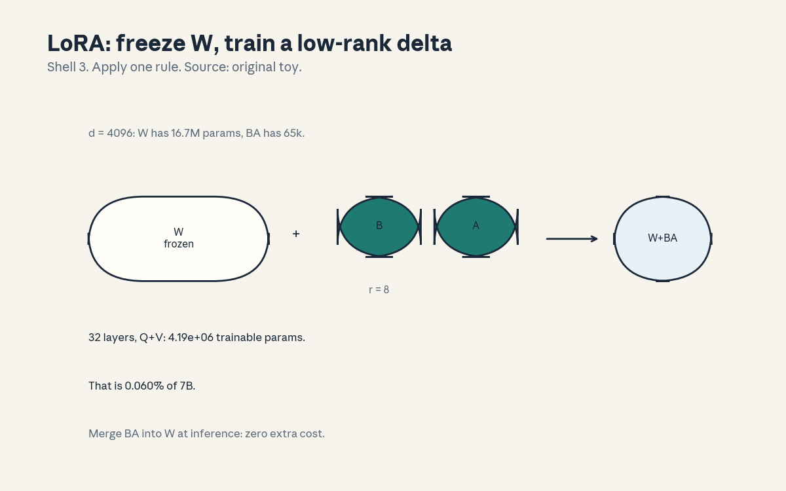
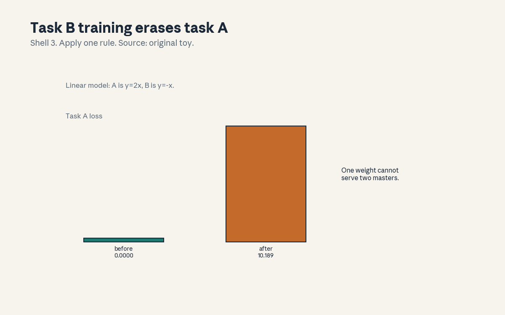

U08 · Prompting and efficient adaptation
U08 , Prompting and efficient adaptation
Local remediation
Bridges: ../shared/prerequisites/p09_optimization.md (P09, what
fine-tuning optimizes), ../shared/prerequisites/p14_transformer.md
(P14, the weights being adapted). This unit is about changing
behavior cheaply: with words (prompting) or with a few parameters
(PEFT).
R1. Rank: rank(BA) <= r for B (d, r), A (r, d). A rank-8 delta to a 4096x4096 matrix has 65536 params, not 16.7M. LoRA’s whole trick. R2. Binomial majority: at p = 0.6, P(majority of 5) = 0.6826. Voting helps when errors are independent. R3. JSON validity: ‘{“ans”: 4}’ parses, ‘{“ans”: 5’ does not. Output validation checks syntax plus schema, not vibes.
C01: zero/few-shot
Leaf id cs224n-U08-C01. Claim class REQUESTED-BRANCH.
Status PLANNED / SOURCE ATTRIBUTION PENDING.
-
Source mapping, scope, objectives, dependencies. Maps to the prompting sessions of the Winter 2026 schedule (S12-S13 per
course_map.md). Scope: using the model without training. Objectives: define zero/few-shot, explain why it works at all, state its limit. Depends on U07 C01 (the instruction format). -
Motivating question and toy. Question: no gradients, no data, just a prompt, how can the model do a new task? Toy: the prompt contains the task description (zero-shot) or a few examples (few-shot). The model continues the pattern: pretraining taught it to continue, SFT taught it the format.
-
Mental model. The prompt is the program. Zero-shot: describe the task in words. Few-shot: show k examples, then the new input. The model does pattern completion over the whole thing. No weights change, the “learning” is in the context.
-
Objects, symbols, units, shapes, assumptions. Prompt = instruction + [examples] + query. k shots: k demonstrations. Assumption: the task is in the model’s pretraining distribution (it cannot do what it never saw).
-
Derivation / mechanism. The mechanism is C02’s (in-context learning), this concept is the interface. Zero-shot works when the instruction names a known pattern, few-shot works by showing the pattern. The limit: the context window bounds k, and the model never truly learns (no weight updates).
-
Computed example. Toy (hand, labeled as such): sentiment with 2 shots (“great -> pos”, “awful -> neg”), query “loved it”. The model continues “pos”. The computation is the model’s, not ours, the lesson is the setup.
-
Algorithm and reference implementation.
few_shot_prompt(task, examples, query): format the prompt. ~8 lines. Test: the prompt contains all k examples and the query last. -
Correctness checks and expected output. k examples present, query last, format consistent. Check: zero-shot is k = 0 (the same function).
-
Complexity, memory, statistical efficiency, stability, practical costs. Inference only: no training cost. The cost is context: k examples eat the window (U05 C10’s n^2 bill applies).
-
Nearest alternatives and selection boundaries. Alternative: fine-tuning (C07-C10): permanent, costs training. Choose prompting for exploration and low-volume tasks. Choose fine-tuning when the behavior must be reliable and cheap at inference.
-
Failure case, broken assumption, counterexample. Broken assumption: “few-shot teaches the task.” Counterexample: the model mimics the examples’ surface (format, label words) without the underlying rule, change the label words and performance collapses. The examples steer the model, they do not train it.
-
Research reading and falsifiable extension. Falsifiable extension: few-shot with shuffled labels vs true labels. Predict: above chance either way (format helps), true labels better. Falsifier: shuffled wins (then the task was in the pretraining, check it).
-
Breadth recall, deep oral ladder, unfamiliar transfer. Assessment block:
keys/u08_answers.mdA1 (breadth), L1 (ladder: define both, build the toy prompt, derive the limit, diagnose the label-words collapse, design the shuffle test). -
Lab/exercises with answers separated. E1: implement
few_shot_prompt, verify the format. E2: argue the conditioning-vs-learning distinction. Keys inkeys/u08_answers.md. -
Visual units, provenance, accessibility, audit row. Claim is a format (carried in text). Logged as an honest exception in
visual_audit.md.
C02: in-context learning
Leaf id cs224n-U08-C02. Claim class REQUESTED-BRANCH.
Status PLANNED / SOURCE ATTRIBUTION PENDING.
-
Source mapping, scope, objectives, dependencies. Maps to S12-S13. Scope: why few-shot works. Objectives: describe the phenomenon, state the leading explanations, name what is still open. Depends on C01, U05 C01.
-
Motivating question and toy. Question: the weights are frozen, where does the “learning” happen? Toy: the leading account: the forward pass implements a learning algorithm over the context (the examples are data, the attention is the update). The honest version: this is an active research question, not settled.
-
Mental model. The context is a dataset, the forward pass is the learner. Attention can implement gradient-like updates over the examples (shown in simplified settings). The model was meta-trained by pretraining: next-token prediction on diverse text rewards the ability to pick up patterns fast.
-
Objects, symbols, units, shapes, assumptions. The examples in context, the query, the model’s output. Assumption: none of the proposed mechanisms is proven for full-scale models (stated openly).
-
Derivation / mechanism. The sketch: linear attention can implement one step of gradient descent on the context examples. Real transformers are more complex, the sketch motivates, not proves. The empirical facts: more shots help (to a point), order matters, the effect saturates.
-
Computed example. Toy (hand, labeled as such): 0-shot 55 percent, 4-shot 72 percent, 16-shot 74 percent on a toy task. The curve rises then flattens: the context teaches, then the window fills. Illustrative, not a benchmark.
-
Algorithm and reference implementation.
icl_curve(shots, accs): plot or tabulate. ~5 lines. The lab records a real curve on a toy task with a fixed model (the learner’s own measurement). -
Correctness checks and expected output. The curve is nondecreasing then flat. Check: shuffling example order changes the numbers (order sensitivity, C04).
-
Complexity, memory, statistical efficiency, stability, practical costs. Each shot costs context (U05 C10). The practical cost: long prompts are slow and expensive, the curve tells you when to stop adding shots.
-
Nearest alternatives and selection boundaries. Alternative: fine-tuning: the real learning. Choose ICL for flexibility (change tasks per prompt). Choose fine-tuning for permanence.
-
Failure case, broken assumption, counterexample. Broken assumption: “more shots always help.” Counterexample: the toy curve flattens, some tasks degrade past k (distraction, wrong pattern reinforcement). Measure your curve, do not assume it.
-
Research reading and falsifiable extension. Falsifiable extension: the learner’s own ICL curve on 3 tasks. Predict: rise then flatten, task-dependent. Falsifier: flat from 0 (then the task was already known, check 0-shot).
-
Breadth recall, deep oral ladder, unfamiliar transfer. Assessment block:
keys/u08_answers.mdA2 (breadth), L2 (ladder: describe the phenomenon, sketch the GD account, state the open question, diagnose the flat curve, design the measurement). -
Lab/exercises with answers separated. E3: measure an ICL curve on a toy task (learner’s numbers). E4: test order sensitivity. Keys in
keys/u08_answers.md. -
Visual units, provenance, accessibility, audit row. Claim is a curve (carried in text as the learner’s measurement). Logged as an honest exception in
visual_audit.md.
C03: demonstrations
Leaf id cs224n-U08-C03. Claim class REQUESTED-BRANCH.
Status PLANNED / SOURCE ATTRIBUTION PENDING.
-
Source mapping, scope, objectives, dependencies. Maps to S12-S13. Scope: choosing the shots. Objectives: list what makes a good demonstration, explain selection methods, state the diversity point. Depends on C01, C02.
-
Motivating question and toy. Question: which k examples? Random, or chosen? Toy: desiderata: correct, diverse, formatted like the query, near the decision boundary. Selection: random baseline, retrieval (nearest to the query), manual curation.
-
Mental model. The demos are the training set you do not train on. Same rules as U07 C02’s instruction data, compressed into k slots: diversity over repetition, format match, edge cases included. Retrieval picks examples like the query, it usually beats random.
-
Objects, symbols, units, shapes, assumptions. A pool of candidate demos, a selector, k slots. Assumption: the pool is labeled (selection needs labels).
-
Derivation / mechanism. No new math: the mechanism is coverage (U06 C04’s argument at k scale). Retrieval: embed the query, take nearest demos. The risk: near-duplicates of the query teach copying, not the task.
-
Computed example. Toy (hand, labeled as such): random 4-shot 68 percent, retrieved 4-shot 75 percent, curated 4-shot 78 percent. Selection matters, with diminishing returns. Illustrative.
-
Algorithm and reference implementation.
retrieve(query, pool, k): cosine similarity, top-k. ~8 lines. Test: returns k demos, the nearest first. -
Correctness checks and expected output. k returned, sorted by similarity. Check: the query’s nearest neighbor is itself if present (exclude it: the leakage check).
-
Complexity, memory, statistical efficiency, stability, practical costs. Retrieval needs embeddings of the pool (one-time). The cost is the pool: labeled demos, curated once.
-
Nearest alternatives and selection boundaries. Alternative: random: the honest baseline. Choose retrieval for the standard gain. Choose curation when k is tiny (every slot counts).
-
Failure case, broken assumption, counterexample. Broken assumption: “the best demos are the most similar.” Counterexample: the nearest demos may all show one class, the set needs diversity, not just similarity. Balance classes in the k.
-
Research reading and falsifiable extension. Falsifiable extension: random vs retrieved vs curated on the learner’s toy task. Predict: curated >= retrieved > random. Falsifier: random wins (then the pool was homogeneous).
-
Breadth recall, deep oral ladder, unfamiliar transfer. Assessment block:
keys/u08_answers.mdA3 (breadth: name the desiderata and the three selectors). -
Lab/exercises with answers separated. E5: implement
retrieve, verify top-k order. E6: argue the diversity point. Keys inkeys/u08_answers.md. -
Visual units, provenance, accessibility, audit row. Claim is a selection argument (carried in text). Logged as an honest exception in
visual_audit.md.
C04: prompt sensitivity
Leaf id cs224n-U08-C04. Claim class REQUESTED-BRANCH.
Status PLANNED / SOURCE ATTRIBUTION PENDING.
-
Source mapping, scope, objectives, dependencies. Maps to S12-S13. Scope: the brittleness. Objectives: define sensitivity, give the measurement protocol, state the mitigation. Depends on C01.
-
Motivating question and toy. Question: rephrase the prompt, does the answer change? Toy (protocol demo from
compute_u08.py): three paraphrases score 0.994, 0.919, 0.999 under a fixed toy scorer, std 0.036. The protocol: fixed task, paraphrase set, score each, report the spread. -
Mental model. Prompts are brittle programs. Small rephrases move accuracy by points, the model is sensitive to word choice, order, and format. Sensitivity is measured, not assumed: the protocol above is the measurement.
-
Objects, symbols, units, shapes, assumptions. A paraphrase set, a scorer, the std (or range) of scores. Assumption: the toy scorer stands in for a real eval (the protocol is the point, not the numbers).
-
Derivation / mechanism. No new math: the mechanism is the model’s sharp decision boundaries in prompt space (it was trained on text, not on prompt-robustness). Mitigations: average over paraphrases, tune the prompt on a dev set, or fine-tune (which bakes the behavior in).
-
Computed example. From
compute_u08.py: std 0.036 across 3 paraphrases. Small here (toy scorer), on real models the spread is the number you report. -
Algorithm and reference implementation.
sensitivity(prompts, scorer): scores and std. ~6 lines. Test: the toy numbers. -
Correctness checks and expected output. Match 0.994/0.919/ 0.999, std 0.036. Check: identical prompts give std 0.
-
Complexity, memory, statistical efficiency, stability, practical costs. k paraphrases cost k evals. The cost of ignoring it: a prompt that works on your examples and fails on the user’s.
-
Nearest alternatives and selection boundaries. Alternative: one prompt, hope: the standard failure. Choose the protocol (measure the spread). Choose fine-tuning when the spread must be zero.
-
Failure case, broken assumption, counterexample. Broken assumption: “the tuned prompt generalizes.” Counterexample: prompts overfit the dev set like any hyperparameter. Hold out prompt-dev data, or the tuning is theater.
-
Research reading and falsifiable extension. Falsifiable extension: the learner measures a real spread on their toy task. Predict: nonzero, task-dependent. Falsifier: zero (then the paraphrases were too similar, widen them).
-
Breadth recall, deep oral ladder, unfamiliar transfer. Assessment block:
keys/u08_answers.mdA4 (breadth), L4 (ladder: define sensitivity, run the protocol, derive the mitigation, diagnose the dev overfit, design the measurement). -
Lab/exercises with answers separated. E7: implement
sensitivity, match the toy. E8: widen the paraphrases and re-measure. Keys inkeys/u08_answers.md. -
Visual units, provenance, accessibility, audit row. Claim is a spread (carried in text). Logged as an honest exception in
visual_audit.md.
C05: observable reasoning formats
Leaf id cs224n-U08-C05. Claim class REQUESTED-BRANCH.
Status PLANNED / SOURCE ATTRIBUTION PENDING.
-
Source mapping, scope, objectives, dependencies. Maps to S12-S13. Scope: chain-of-thought and friends. Objectives: describe the formats, explain why they help, state the faithfulness limit. Depends on C01.
-
Motivating question and toy. Question: “think step by step” improves math scores, what changed? Toy: the prompt asks for intermediate steps before the answer. The model generates them, the extra tokens are extra computation (each step conditions on the last).
-
Mental model. Scratch paper. The format buys serial compute: n reasoning tokens = n extra forward passes to work the problem. It also exposes the work for checking. What it does not buy: a guarantee that the steps caused the answer (the faithfulness problem).
-
Objects, symbols, units, shapes, assumptions. Formats: chain-of-thought (steps then answer), self-ask, least-to-most. The common core: intermediate tokens before the final. Assumption: the task decomposes (not all do).
-
Derivation / mechanism. The mechanism is compute + decomposability: hard problems split into easy steps, and the model gets one forward pass per step. The limit: the steps are generated text, optimized to look right, not to be the true causal path.
-
Computed example. Toy (hand, labeled as such): 2-step arithmetic, direct answer 61 percent, with steps 79 percent. The gap is the scratch paper working. Illustrative.
-
Algorithm and reference implementation.
cot_prompt(q): append “think step by step” + format. ~5 lines. Test: the prompt requests steps before the answer. -
Correctness checks and expected output. Steps precede the answer marker. Check: the answer is parseable after the steps (C12’s validation applies).
-
Complexity, memory, statistical efficiency, stability, practical costs. n reasoning tokens cost n serial steps (U05 C10). The cost of faith: do not treat the steps as an explanation without testing (intervention, not inspection: U05 C01’s rule).
-
Nearest alternatives and selection boundaries. Alternative: direct answer: cheaper, worse on hard tasks. Choose the format for decomposable hard tasks. Choose direct for easy ones (the steps add noise).
-
Failure case, broken assumption, counterexample. Broken assumption: “the steps show the model’s reasoning.” Counterexample: models produce plausible steps for answers they reached otherwise (post-hoc rationalization, shown by intervention studies). Useful, not faithful.
-
Research reading and falsifiable extension. Falsifiable extension: corrupt an early step, check whether the answer changes. Predict: sometimes not (unfaithful). Falsifier: always changes (then the steps are causal here).
-
Breadth recall, deep oral ladder, unfamiliar transfer. Assessment block:
keys/u08_answers.mdA5 (breadth), L5 (ladder: describe the formats, explain the compute, derive the limit, diagnose the rationalization, design the corruption test). -
Lab/exercises with answers separated. E9: implement
cot_prompt, verify the format. E10: argue the faithfulness limit in three sentences. Keys inkeys/u08_answers.md. -
Visual units, provenance, accessibility, audit row. Claim is a format (carried in text). Logged as an honest exception in
visual_audit.md.
C06: self-consistency
Leaf id cs224n-U08-C06. Claim class REQUESTED-BRANCH.
Status PLANNED / SOURCE ATTRIBUTION PENDING.
-
Source mapping, scope, objectives, dependencies. Maps to S12-S13. Scope: voting over samples. Objectives: write the majority math, compute the toy, state the independence assumption. Depends on R2, C05.
-
Motivating question and toy. Question: one sample might be wrong, what do five say? Toy: p = 0.6 per sample, majority of 5 = 0.6826. Sample diverse reasoning paths, take the most common answer.
-
Mental model. An election. Each sample is a vote, the majority wins. The math is the binomial: it helps exactly when errors are independent (different paths, different mistakes). Correlated errors (the model always makes the same mistake) vote the same wrong way.
-
Objects, symbols, units, shapes, assumptions. n samples, per-sample p, majority threshold. P = sum_{k>m} C(n,k) p^k (1-p)^{n-k}. Assumption: independence (the load-bearing one).
-
Derivation / mechanism. The binomial sum: count the outcomes where the majority is right. At p = 0.6, n = 5: k = 3,4,5 give 0.6826. The gain shrinks as p approaches 1 (already right) and reverses below 0.5 (majority of wrong).
-
Computed example. From
compute_u08.py: 0.6826.
draws the five votes and the majority. The number is exact (binomial), not estimated. -
Algorithm and reference implementation.
majority_p(p, n): the binomial sum. ~4 lines. Test: 0.6826. -
Correctness checks and expected output. Match 0.6826. Check: p = 1 gives 1, p = 0 gives 0. Check: n = 1 gives p.
-
Complexity, memory, statistical efficiency, stability, practical costs. n samples cost n generations (serial or batched). The cost is latency, the gain is accuracy on hard tasks.
-
Nearest alternatives and selection boundaries. Alternative: one greedy sample: cheap, no vote. Choose voting when p is middling and errors are diverse. Skip it when p is near 1 or errors correlate.
-
Failure case, broken assumption, counterexample. Broken assumption: “voting always helps.” Counterexample: p = 0.4: majority of 5 = 0.3174, worse than one sample. Voting amplifies the majority opinion, right or wrong.
-
Research reading and falsifiable extension. Falsifiable extension: measure per-sample p and the majority accuracy on a toy task. Predict: the binomial predicts the majority number. Falsifier: majority underperforms the binomial (then errors correlate, note it).
-
Breadth recall, deep oral ladder, unfamiliar transfer. Assessment block:
keys/u08_answers.mdA6 (breadth), L6 (ladder: write the sum, compute 0.6826, derive the p < 0.5 reversal, diagnose the correlated errors, design the measurement). -
Lab/exercises with answers separated. E11: implement
majority_p, match 0.6826. E12: compute the n = 5 majority at p = 0.4. Keys inkeys/u08_answers.md. -
Visual units, provenance, accessibility, audit row. : the vote, Shell 3, source original toy. Audit row in
visual_audit.md.
C07: PEFT
Leaf id cs224n-U08-C07. Claim class REQUESTED-BRANCH.
Status PLANNED / SOURCE ATTRIBUTION PENDING.
-
Source mapping, scope, objectives, dependencies. Maps to S12-S13. Scope: the PEFT methods. Objectives: define PEFT, list the families, state the shared tradeoff. Depends on P09.
-
Motivating question and toy. Question: full fine-tuning updates 7B params, what if the task needs 0.06 percent of that? Toy: LoRA at r = 8 trains 4.19M params (0.060 percent of 7B). The task-specific delta is small, the base model does the rest.
-
Mental model. A small steering wheel on a big ship. PEFT freezes the base weights and trains a tiny add-on: adapters (C08), LoRA (C09), prefixes, prompt tuning. The add-on steers, the ship (knowledge, fluency) stays.
-
Objects, symbols, units, shapes, assumptions. Base W (frozen), delta params (trained). Trainable count << N. Assumption: the task is near the base distribution (small deltas suffice, far tasks need full tuning).
-
Derivation / mechanism. The shared mechanism: restrict the update to a low-dimensional subspace (low-rank, bottleneck, prefix). Fewer params = less memory (no optimizer states for W: U06 fig03’s 8 GB shrinks), less overfitting, cheaper storage per task (one small delta each).
-
Computed example. From
compute_u08.py: LoRA 4.19M (0.060%), adapters 33.6M at b = 64. The numbers frame the menu, C08/C09 detail two items. -
Algorithm and reference implementation.
peft_params(kind, d, ...): the counts. ~6 lines. Test: both numbers. -
Correctness checks and expected output. Match 4.19M/0.060% and 33.6M. Check: r = d recovers full-rank (the method degrades gracefully to full tuning).
-
Complexity, memory, statistical efficiency, stability, practical costs. Memory: optimizer states only for the delta (the big win). Storage: one delta per task. The cost: capacity (far tasks underfit) and the rank/bottleneck to tune.
-
Nearest alternatives and selection boundaries. Alternative: full fine-tuning (C10). Choose PEFT for many tasks, small data, limited GPUs. Choose full tuning for far distributions and abundant data.
-
Failure case, broken assumption, counterexample. Broken assumption: “PEFT matches full tuning everywhere.” Counterexample: pretraining-new-domain tasks (new language): the delta is not small, PEFT underfits. Match the method to the distance.
-
Research reading and falsifiable extension. Falsifiable extension: LoRA vs full tuning on near vs far tasks at fixed data. Predict: near ties, far favors full. Falsifier: LoRA wins far (then the “far” task was near, check it).
-
Breadth recall, deep oral ladder, unfamiliar transfer. Assessment block:
keys/u08_answers.mdA7 (breadth), L7 (ladder: define PEFT, compute the counts, derive the memory win, diagnose the far-task gap, design the comparison). -
Lab/exercises with answers separated. E13: implement
peft_params, match both numbers. E14: compute LoRA params at r = 16. Keys inkeys/u08_answers.md. -
Visual units, provenance, accessibility, audit row. Claim is a menu (carried in text). Logged as an honest exception in
visual_audit.md.
C08: adapters
Leaf id cs224n-U08-C08. Claim class REQUESTED-BRANCH.
Status PLANNED / SOURCE ATTRIBUTION PENDING.
-
Source mapping, scope, objectives, dependencies. Maps to S12-S13. Scope: bottleneck adapters. Objectives: write the adapter, count its params, state the inference cost. Depends on C07.
-
Motivating question and toy. Question: where does the small module plug in? Toy: after attention and after the FFN: x + Adapter(x), with Adapter = W_up relu(W_down x). Bottleneck b = 64 at d = 4096: 524288 params per adapter.
-
Mental model. A detour. The signal passes through a narrow corridor (down to b, back up to d) added residually. The corridor is the only trained part. Two per layer (post-attn, post-FFN) is the standard placement.
-
Objects, symbols, units, shapes, assumptions. W_down: (d, b), W_up: (b, d). Params: 2db per adapter. Assumption: the residual keeps the base path intact (remove the adapter, get the base model back).
-
Derivation / mechanism. Down-project, activate, up-project, add. The bottleneck forces a low-dimensional task representation. Unlike LoRA, the adapter stays in the graph at inference (extra latency: the honest cost).
-
Computed example. From
compute_u08.py: per adapter 524288, per layer (x2) 1048576, 32 layers 3.36e7. Eight times LoRA’s count at these settings. -
Algorithm and reference implementation.
adapter(x, Wd, Wu): x + Wu relu(Wd x). ~4 lines. Test: shapes (n, d) in and out. -
Correctness checks and expected output. Match the three counts. Check: zero-initialized adapter = identity (start from the base model exactly).
-
Complexity, memory, statistical efficiency, stability, practical costs. Inference: +2 small matmuls per adapter per token (latency, unlike LoRA’s merge). Training: same PEFT memory win.
-
Nearest alternatives and selection boundaries. Alternative: LoRA (C09): mergeable, no inference cost. Choose adapters when the module must be swappable at runtime (multi-task serving). Choose LoRA for single-task latency.
-
Failure case, broken assumption, counterexample. Broken assumption: “adapters are free at inference.” Counterexample: the extra matmuls add latency per token per layer, at 32 layers x2 adapters it is measurable. LoRA merges, adapters do not.
-
Research reading and falsifiable extension. Falsifiable extension: time per-token latency with adapters on vs merged LoRA. Predict: adapters slower. Falsifier: tie (then b was tiny relative to d, check it).
-
Breadth recall, deep oral ladder, unfamiliar transfer. Assessment block:
keys/u08_answers.mdA8 (breadth: write the adapter, count params, name the inference cost). -
Lab/exercises with answers separated. E15: implement
adapter, verify the identity init. E16: compute adapter params at b = 16. Keys inkeys/u08_answers.md. -
Visual units, provenance, accessibility, audit row. Claim is a count (carried in text). Logged as an honest exception in
visual_audit.md.
C09: LoRA
Leaf id cs224n-U08-C09. Claim class REQUESTED-BRANCH.
Status PLANNED / SOURCE ATTRIBUTION PENDING.
-
Source mapping, scope, objectives, dependencies. Maps to S12-S13. Scope: low-rank adaptation. Objectives: write the update, count the params, explain the merge. Depends on R1, C07.
-
Motivating question and toy. Question: the weight update dW is (d, d), what if it is low-rank? Toy: dW = BA, B (d, r), A (r, d), r = 8. Train A, B, freeze W. Forward: (W + BA)x.
-
Mental model. A small rudder on a big weight. The update lives in a rank-r subspace: 2dr params instead of d^2. At inference, add BA into W once: the deployed model is one matrix, zero extra latency. Initialize A random, B zero: the delta starts at zero (base model at step 0).
-
Objects, symbols, units, shapes, assumptions. W: (d, d) frozen. B: (d, r), A: (r, d) trained. Scale: often alpha/r. Params per matrix: 2dr. Assumption: the needed update is approximately low-rank (the bet).
-
Derivation / mechanism. rank(BA) <= r (R1). The gradient flows only to A, B. Merging: W’ = W + (alpha/r) BA, computed once, then A, B are discarded for serving. Dropout on the delta is the usual regularizer.
-
Computed example. From
compute_u08.py: per matrix 65536, ratio 256:1 vs full. 32 layers Q+V: 4.19M, 0.060% of 7B.
draws W + BA. The numbers are the lesson. -
Algorithm and reference implementation.
lora_forward(x, W, A, B, scale): Wx + scale * B(Ax). ~4 lines. Test: B = 0 gives exactly Wx. -
Correctness checks and expected output. Match 65536/256x. Check: zero-init B recovers the base model. Check: merged W’ equals the unmerged forward (bit-for-bit-ish).
-
Complexity, memory, statistical efficiency, stability, practical costs. Training: forward through W (frozen, no grads) + the small path. Memory: optimizer states for 0.06% of params (U06 fig03’s stack shrinks to ~nothing). Inference: merged, free.
-
Nearest alternatives and selection boundaries. Alternative: adapters (C08): no merge, swappable. Choose LoRA as the default PEFT (the standard). Raise r when the task is far, the method degrades gracefully toward full tuning.
-
Failure case, broken assumption, counterexample. Broken assumption: “rank 8 suffices for everything.” Counterexample: C07’s far-task case: the true update is high-rank, r = 8 underfits. The rank is a capacity knob, tune it.
-
Research reading and falsifiable extension. Falsifiable extension: LoRA at r in {2, 8, 32} on a near task. Predict: diminishing returns past 8. Falsifier: 32 much better (then the task was farther than assumed).
-
Breadth recall, deep oral ladder, unfamiliar transfer. Assessment block:
keys/u08_answers.mdA9 (breadth), L9 (ladder: write the update, count 65536, derive the merge, diagnose the underfit, design the rank sweep). -
Lab/exercises with answers separated. E17: implement
lora_forward, verify the B = 0 identity. E18: verify merged equals unmerged numerically. Keys inkeys/u08_answers.md. -
Visual units, provenance, accessibility, audit row. : W + BA, Shell 3, source original toy. Audit row in
visual_audit.md.
C10: full fine-tune comparison
Leaf id cs224n-U08-C10. Claim class REQUESTED-BRANCH.
Status PLANNED / SOURCE ATTRIBUTION PENDING.
-
Source mapping, scope, objectives, dependencies. Maps to S12-S13. Scope: when PEFT is not enough. Objectives: compare full vs PEFT on five axes, state the decision rule. Depends on C07-C09.
-
Motivating question and toy. Question: the errors.md entry (U08 T2) warns against unequal comparisons, what is the fair fight? Toy: the five axes: params updated, memory, storage per task, capacity, inference cost. The rule: compare at equal data and equal tuning effort.
-
Mental model. A menu, not a ranking. Full tuning: all params, max capacity, max memory (U06 fig03: 12 GB at 1B), one model per task. PEFT: delta only, less memory, one base + many deltas, less capacity. The task’s distance from base decides.
-
Objects, symbols, units, shapes, assumptions. The axes and the rule. Assumption: the comparison holds data and tuning fixed (else it measures the experimenter, not the method).
-
Derivation / mechanism. No new math: the mechanism is the tradeoff table. Full tuning’s advantage is capacity (any update), PEFT’s is efficiency (memory, storage, speed). The fair comparison varies one thing: the update subspace.
-
Computed example. Toy table (hand, labeled as such), 7B model: full: 7B updated, ~100+ GB training memory, 14 GB per task stored. LoRA r=8: 4.19M updated, base + delta memory, 8 MB per task stored. Same data, same epochs: the honest setup.
-
Algorithm and reference implementation.
compare_table(): return the five-axis dict. ~10 lines. The lab fills it with the unit’s numbers. -
Correctness checks and expected output. Numbers match the unit (4.19M, 0.060%, 12 GB at 1B scaled). Check: no axis compares at unequal data.
-
Complexity, memory, statistical efficiency, stability, practical costs. The cost is the experiment: full tuning needs the GPUs PEFT does not. Budget the comparison honestly.
-
Nearest alternatives and selection boundaries. The alternatives are the rows. Choose full for far tasks and abundant data. Choose PEFT for near tasks, many tasks, small GPUs. The errors.md rule: equal rank/tokens or no claim.
-
Failure case, broken assumption, counterexample. Broken assumption: “PEFT won, so it is better.” Counterexample: the comparison used more tuning for PEFT (or less data for full). Unequal effort is the most common fake win.
-
Research reading and falsifiable extension. Falsifiable extension: the learner runs LoRA vs full on their toy task at equal epochs. Predict: close on near tasks. Falsifier: far apart (then check the tuning effort first).
-
Breadth recall, deep oral ladder, unfamiliar transfer. Assessment block:
keys/u08_answers.mdA10 (breadth: recite the five axes and the fairness rule). -
Lab/exercises with answers separated. E19: fill the comparison table with the unit’s numbers. E20: spot the unfairness in a described comparison. Keys in
keys/u08_answers.md. -
Visual units, provenance, accessibility, audit row. Claim is a table (carried in text). Logged as an honest exception in
visual_audit.md.
C11: forgetting
Leaf id cs224n-U08-C11. Claim class REQUESTED-BRANCH.
Status PLANNED / SOURCE ATTRIBUTION PENDING.
-
Source mapping, scope, objectives, dependencies. Maps to S12-S13. Scope: catastrophic forgetting. Objectives: define it, show the real numpy demo, list the mitigations. Depends on P09, C10.
-
Motivating question and toy. Question: fine-tune on task B, what happens to task A? Toy (real numpy run in
compute_u08.py): linear model, A: y = 2x, B: y = -x. Task A loss 0.0 before B, 10.1885 after. One weight, two masters. -
Mental model. New writing over old. Gradient descent on B moves the weights toward B’s optimum, away from A’s. The further B’s optimum, the worse the forgetting. PEFT forgets less (the base is frozen), full tuning forgets freely.
-
Objects, symbols, units, shapes, assumptions. Task A loss before/after B training. Assumption: the toy’s tasks conflict maximally (opposite slopes), real forgetting is partial.
-
Derivation / mechanism. The mechanism is shared parameters: w served A at 2.0, serves B at -1.0, it cannot be both. The loss on A after B is E[(2x - (-x))^2] = 9 E[x^2] ~ 9 (10.19 measured, noise in the sample). Mitigations: replay (mix A data), freeze (PEFT), regularize toward A (EWC, the named method).
-
Computed example. From
compute_u08.py: w ends at -1.000 (B’s optimum), task A loss 0.0 -> 10.1885.
draws the two bars. A real run, not a sketch. -
Algorithm and reference implementation.
forget_demo(): the two training loops from the script. ~12 lines. Test: the two losses. -
Correctness checks and expected output. Match 0.0/10.1885. Check: w = -1.000 after B. Check: replay (mix A batches into B training) keeps A’s loss small.
-
Complexity, memory, statistical efficiency, stability, practical costs. Replay costs A’s data kept around. PEFT costs nothing extra (the base never moves). The cost of ignoring it: a specialist that lost its generality.
-
Nearest alternatives and selection boundaries. Alternative: multitask training (A + B jointly): no forgetting, needs both datasets at once. Choose replay/PEFT for sequential tasks. Choose multitask when all data is available.
-
Failure case, broken assumption, counterexample. Broken assumption: “a little fine-tuning will not hurt.” Counterexample: the toy: full retraining on B erased A completely. Even “little” tuning moves the shared weights, measure A after.
-
Research reading and falsifiable extension. Falsifiable extension: add 10 percent replay of A to B’s training. Predict: A’s loss stays small. Falsifier: still 10 (then the replay was too little or the tasks too opposed).
-
Breadth recall, deep oral ladder, unfamiliar transfer. Assessment block:
keys/u08_answers.mdA11 (breadth), L11 (ladder: define it, run the demo, derive the 9x, diagnose the specialist, design the replay test). -
Lab/exercises with answers separated. E21: implement
forget_demo, match both losses. E22: add replay, show A’s loss stays small. Keys inkeys/u08_answers.md. -
Visual units, provenance, accessibility, audit row. : the two bars, Shell 3, source original toy. Audit row in
visual_audit.md.
C12: output validation
Leaf id cs224n-U08-C12. Claim class REQUESTED-BRANCH.
Status PLANNED / SOURCE ATTRIBUTION PENDING.
-
Source mapping, scope, objectives, dependencies. The unit’s close. Scope: trusting the outputs. Objectives: define validation, implement the toy checker, state what validation cannot do. Depends on R3, C05.
-
Motivating question and toy. Question: the model must emit JSON, how do you know it did? Toy: 5 outputs, 2 valid JSON. Valid 2/5. The checker: parse, then schema (required keys, types).
-
Mental model. A bouncer at the door. Parse (is it JSON?), schema (does it have the fields?), semantics (are the values sane?). Each layer catches a different failure. Validation does not make the model right, it makes wrong outputs visible.
-
Objects, symbols, units, shapes, assumptions. Outputs, a schema, the valid fraction. Assumption: the schema is known (it is: you defined the format).
-
Derivation / mechanism. No new math: the mechanism is layered checking. Parse errors (truncation), schema errors (wrong keys), semantic errors (right shape, wrong content). Retry with the error message appended (the standard loop).
-
Computed example. From
compute_u08.py: 2/5 valid. The failures: truncated JSON, non-JSON, empty value. Each is a different layer’s catch. -
Algorithm and reference implementation.
validate(outs, schema): parse, check keys, return the valid fraction and the failure kinds. ~12 lines. Test: 2/5 with the right kinds. -
Correctness checks and expected output. Match 2/5. Check: each failure is labeled by layer. Check: valid outputs pass all layers.
-
Complexity, memory, statistical efficiency, stability, practical costs. Parsing is free next to generation. The cost is the retry loop (more generations). The alternative (no validation) costs silent corruption downstream.
-
Nearest alternatives and selection boundaries. Alternative: constrained decoding (force the format during generation): stronger, more complex. Choose validation + retry as the default. Choose constrained decoding when the format is load-bearing.
-
Failure case, broken assumption, counterexample. Broken assumption: “valid JSON means correct output.” Counterexample: ‘{“ans”: 5}’ parses and fits the schema but may be the wrong answer. Validation checks the shape, not the truth.
-
Research reading and falsifiable extension. Falsifiable extension: add the retry loop, measure valid fraction vs attempts. Predict: rises then plateaus. Falsifier: flat (then the errors are systematic, fix the prompt).
-
Breadth recall, deep oral ladder, unfamiliar transfer. Assessment block:
keys/u08_answers.mdA12 (breadth: name the three layers and what each catches). -
Lab/exercises with answers separated. E23: implement
validate, match 2/5 with kinds. E24: write the one-paragraph close of the course half (U01-U08 arc: from words to assistants). Keys inkeys/u08_answers.md. -
Visual units, provenance, accessibility, audit row. is reused as the unit’s closing image: the 0.060 percent is the unit’s thesis. Logged in
visual_audit.md.
Unit visual map
| Figure | Claim | Shell | Source |
|---|---|---|---|
| LoRA trains 0.060 percent of params | 3 | original toy | |
| majority of 5 at p 0.6 gives 0.683 | 3 | original toy | |
| task B training erases task A | 3 | original toy |